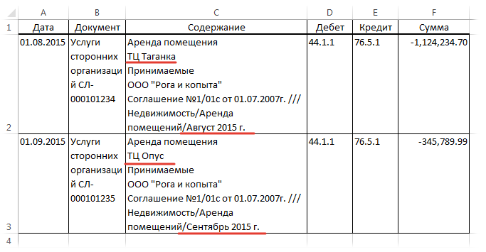

Tips_All_WordFromEndString.xls (29,5 KiB, 1 618 скачиваний)
Tips_All_WordFromEndString.xls (29,5 KiB, 1 618 скачиваний)Как получить слово после последнего пробела
Получить слово до первого пробела достаточно просто:
=ПСТР(A1;1;НАЙТИ(" ";A1)-1)
Но куда чаще сложности возникают с получением слова(символа), находящегося на определенной позиции между пробелом. Я беру в качестве примера пробел, но на самом деле это может быть абсолютно любой символ. Например, для получения второго слова(т.е. слова между первым пробелом и третьим), можно составить такую формулу:
=ПСТР(A1;НАЙТИ(" ";A1)+1;НАЙТИ(" ";A1;НАЙТИ(" ";A1)+1)-НАЙТИ(" ";A1)-1)
На мой взгляд, выглядит несколько закручено, хотя все предельно просто:
Но есть проблема - если второго пробела нет, то формула выдаст ошибку #ЗНАЧ!. Тогда придется еще и проверку на ошибку делать, что явно не добавит формуле элегантности. Поэтому я предпочитаю использовать такую формулу:
=ПОДСТАВИТЬ(ПРАВСИМВ(ПСТР(" "&ПОДСТАВИТЬ(A1;" ";ПОВТОР(" ";999));1;999*2);999);" ";"")
На первый взгляд куда кошмарнее, чем первая. Но у неё есть ряд преимуществ:
она не нуждается в проверке на отсутствие пробелов;
изменением одного числа можно получить не второе, а 3-е, 4-е и т.д. слово.
Разберем самое главное: чтобы получить первое слово от начала строки, нужно в блоке 999*2 заменить 2 на 1:
=ПОДСТАВИТЬ(ПРАВСИМВ(ПСТР(" "&ПОДСТАВИТЬ(A1;" ";ПОВТОР(" ";999));1;999*1);999);" ";"")
Чтобы получить 5-е - на 5:
=ПОДСТАВИТЬ(ПРАВСИМВ(ПСТР(" "&ПОДСТАВИТЬ(A1;" ";ПОВТОР(" ";999));1;999*5);999);" ";"")
Если вдруг пробелов будет меньше, чем указанное число - то мы получим слово после последнего пробела (т.е. первое слово с конца строки). Это значит, что если указать *999 - в большинстве случаев получим как раз последнее слово.
Как это работает: при помощи функции ПОДСТАВИТЬ мы заменяем все пробелы в тексте на 999 пробелов(число может быть меньше 999, но не должно быть меньше длины исходной строки). Далее при помощи функции ПСТР мы выдергиваем первые 999 символов, помноженные на число, обозначающее необходимое нам слово(999*1 - первое). По сути только то количество слов, которое указано(в данном случае одно - 999*1). Затем функция ПРАВСИМВ возвращает нам только последнее слово - т.е. нужное нам. А далее та же ПОДСТАВИТЬ убирает лишние теперь пробелы, заменяя их все на пустую строку - "".
Вроде бы достигли того, что нам нужно было. Но вдруг необходимо получить второе слово с конца строки? Как тогда быть? Считать пробелы? А если у нас их штук 50 хотя бы? Можно использовать некую модификацию приведенной выше формулы, но которая как раз возвращает слово с конца строки:
=ПОДСТАВИТЬ(ПСТР(ПРАВСИМВ(" "&ПОДСТАВИТЬ(A1;" ";ПОВТОР(" ";999));999*1);1;999);" ";"")
Принцип тот же: если в блоке 999*1 заменить 1 на 5, то получим 5-е слово с конца строки.
Если необходимо выдергивать слова по пробелам, то лучше дополнить еще одной функцией - СЖПРОБЕЛЫ:
=ПОДСТАВИТЬ(ПРАВСИМВ(ПСТР(" "&ПОДСТАВИТЬ(СЖПРОБЕЛЫ(A1);" ";ПОВТОР(" ";999));1;999*1);999);" ";"")
=ПОДСТАВИТЬ(ПСТР(ПРАВСИМВ(" "&ПОДСТАВИТЬ(СЖПРОБЕЛЫ(A1);" ";ПОВТОР(" ";999));999*1);1;999);" ";"")
Так же можно "вытянуть" определенное количество слов:
=СЖПРОБЕЛЫ(ПСТР(ПРАВСИМВ(" "&ПОДСТАВИТЬ(A1;" ";ПОВТОР(" ";999));999*3);1;999*2))
3 — третье слово с конца строки.
2 — количество слов.
Остается еще добавить, что вместо пробелов могут быть и другие символы. Например, очень часто встречается ситуация, когда надо из текста получить не одно слово в конкретной позиции, а конкретную строку из текста, разнесенного в одной ячейке на строки:

Тогда для получения второй строки(ТЦ Таганка и ТЦ Опус) можно применить такую формулу:
=ПОДСТАВИТЬ(ПРАВСИМВ(ПСТР(СИМВОЛ(10)&ПОДСТАВИТЬ(C2;СИМВОЛ(10);ПОВТОР(СИМВОЛ(10);999));1;999*2);999);СИМВОЛ(10);"")
СИМВОЛ(10) здесь означает перенос строки. Обычно эти переносы делаются с клавиатуры. Входим в режим редактирования ячейки, ставим курсор в нужное место строки и нажимаем Alt+Enter.
я для получения месяцев(Август 2015 г. и Сентябрь 2015 г.) - такую:
=ПОДСТАВИТЬ(ПСТР(ПРАВСИМВ("/"&ПОДСТАВИТЬ(C2;"/";ПОВТОР("/";999));999*1);1;999);"/";"")
Если лень прописывать внутри формулы один символ несколько раз, его можно записать в ячейку(скажем, G1) и в формуле указать ссылку на эту ячейку:
=ПОДСТАВИТЬ(ПСТР(ПРАВСИМВ(G1&ПОДСТАВИТЬ(C2;G1;ПОВТОР(G1;999));999*1);1;999);G1;"")
Теперь для изменения символа надо будет изменить его один раз в ячейке и формула "вытащит" нужное слово/строку, опираясь именно на этот символ.
Скачать пример:
Tips_All_WordFromEndString.xls (29,5 KiB, 1 618 скачиваний)